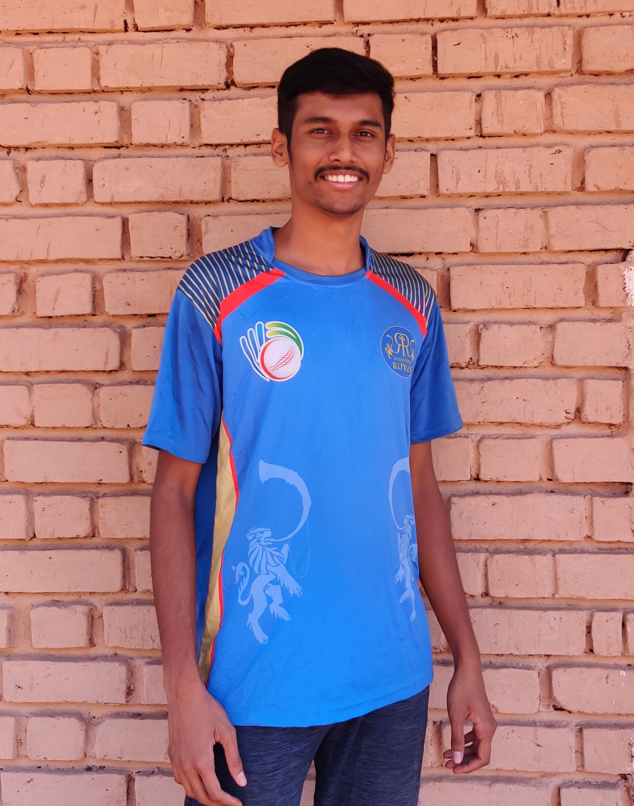

Hey there,
I'm Deepak Thorat. I'm from Pune,Maharashtra.
I enjoy playing physical sports rather than virtual gaming. As all we Indians have made the cricket a national religion ,I started playing cricket as kid . BUT now I'm more inclined towards football. Apart from this I love watching webseries (hate reading books).
I also love travelling and visit and explore the unexplored. I like to understand the traditions , culture of various communities. Because of thiS interest I have also joined the group called
GRA in IIT BOMBAY.
Since joining the group I have gone for two camps with the GRA. The experiences of those two camps was so satisfying that It has developed my passion to explore more rural India ,their culture ,method of living ,understanding their problems ,finding solution if possible.
Now talking about my passion I look forward to work in Agricultural sector as well as Renewable energy. I would like to solve problem in agricultural sector with some technical as well as sustainable solution .